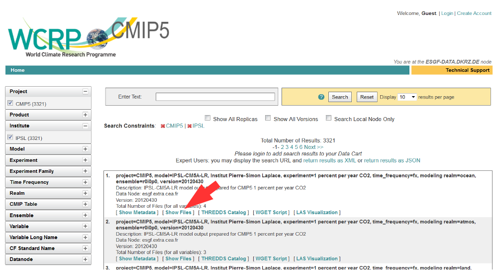
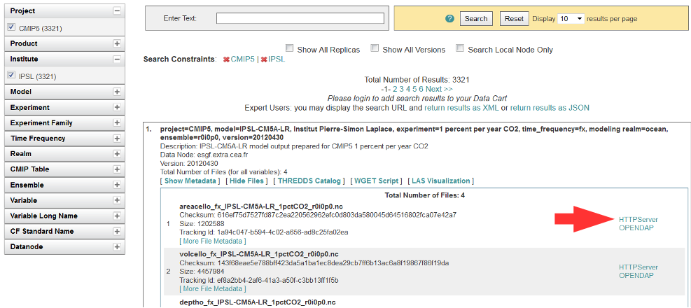
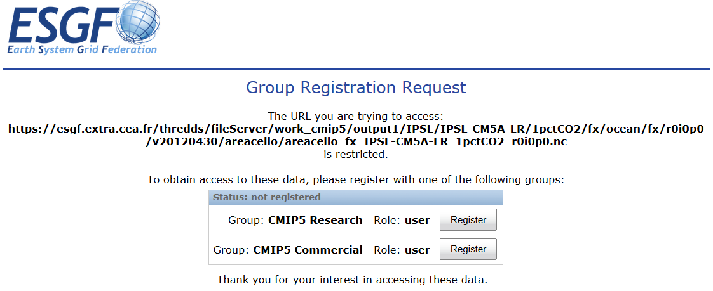
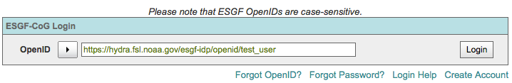
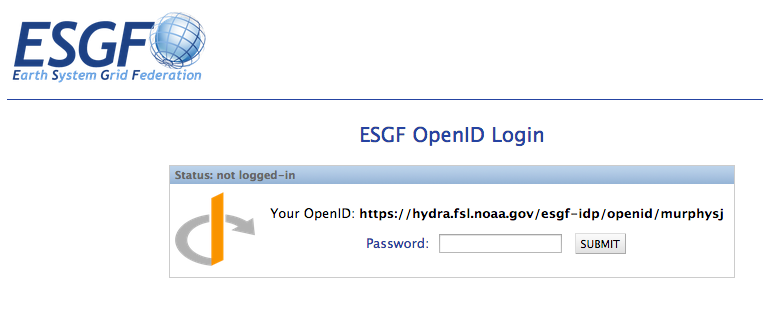
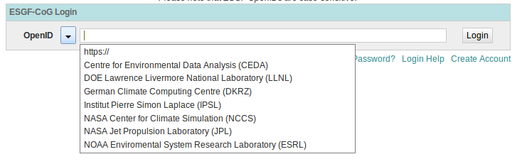
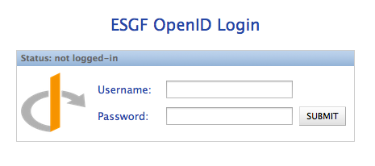

User Tutorials¶
Login/OpenID¶
Create an account¶
- Many projects are public, and can be viewed without creating an account.
- An account will allow you to join a project and edit that project’s wiki pages.
- An account is required to download data from an ESGF node.
Create Account
- Click on the “Create Account” link in the upper right corner of a CoG page
Fill in the User Profile
- Items in bold are mandatory.
- Interest keywords, photo, and institution will show up on a project’s People listing.
Join or Create a project¶
Note
You do not need to join a project to download data.
To join a project or create a project, you must first have an account (step 1).
Join an existing project
- Navigate to the project you are interested in. The project owner may send you the URL in an email, or you can use the Project Browser to view a list of projects.
- Click the “Join the X project” in the upper right corner of the project page.
- Wait for approval. Only project administrators can approve new members.
Create a project
Note
Don’t request a new project just to download data, it will not be approved. If you are interested in data, navigate to the project hosting the data and follow their instructions for access.
Click the “Register a New Project” link in the upper right-hand corner of the CoG environment
Setting Project Options
Below is a screenshot of the project registration page. A project can be modified after creation, with the exception of the project short name. This page allows project administrators to:
- Define a project’s description
- Select a project’s parents and peers
- Add a project logo
- Toggle privacy
- Turn on Upper Navigation Bar links
- Turn on standardized Resource folders
- Turn on the data service widget
- Turn on Forum notifications
Authorization for ESGF data access¶
Why data access control groups?¶
Often data users must accept a “terms of use” (e.g. agree to acknowledge the data producers in publications) before downloading data. Therefore, the creation of a ESGF-CoG account is normally not sufficient for data access, you also need the authorization to access data. User’s must join a data access control group for the project they wish to download data from. If the right group is not joined, for example, Wget scripts will prematurely fail with a “Forbidden” error message.
Which data access control groups currently exist in ESGF?¶
Below is a list of access control groups by project:
| Project | Group Name |
|---|---|
| CMIP5 | CMIP5 Research, CMIP5 Commercial |
| CORDEX | CORDEX Research, CORDEX Commercial |
| EUCLIPSE | CMIP5 Research |
| GeoMIP | CMIP5 Research |
| LUCID | CMIP5 Research |
| Obs4MIPS | CMIP5 Research, NASA OBS |
| PMIP3 | CMIP5 Research |
| TAMIP | CMIP5 Research |
| ACME | ACME |
| ISI-MIP | ISI-MIP Research, ISI-MIP Unrestricted |
| specs | SPECS |
For example, if you need CMIP5 data, you will need to join either CMIP5 Research or CMIP5 Commercial. Which CMIP5 data are restricted to non-commercial research and education and which data can also be used for commercial purposes is tabulated in the CMIP5 document Modeling Groups and their Terms of Use. A membership in CMIP5 Research is also sufficient for download of data of other MIPs, not just CMIP5. An exception is ISI-MIP. Other projects such as CORDEX have their own groups. Which CORDEX data can only be used for non-commercial purposes and which thoroughly is listed in the CORDEX Models overview.
Who has to join?¶
Everyone who has created a CoG account and wants to download data from one of the projects listed in the table above must join the appropriate access control group. This will need to be repeated for each ESGF OpenID since ESGF cannot assign group memberships to persons, only to OpenIDs. You will need to do this for each group you need data from. It is not necessary to create a new CoG account for each group. It is possible to have several memberships with one OpenID.
How to join?¶
Two different ways to join a data access control group in ESGF:
- View list of data access control groups
A comprehensive list of access control groups can be found at: ESGF Data Access Control Groups, which contains a list of groups and links for registration. Note, the home pages of ESGF nodes may list or exclude groups based on their individual holdings.
- Download a file with your browser
The easiest way to join a data access control group is a download a file with your browser’s download manager. This process will automatically present a window for group registration.
- In an ESGF portal, select a dataset with data of the project you are interested in and click on “Show Files”.
- 
- Click on “HTTPServer”
- 
- After login you will be guided to the Group Registration Request page if a group membership is missing.
- 
- Choose a group and click on “Register”.
- A sub-window opens with the terms of use.
- After accepting the terms, group membership is immediately active and the download window will open.
Logging in with OpenID¶
Note
An OpenID is merely a username in the form of a URL. Do not try to open this URL in a browser window.
Note
ESGF uses a self-signed SSL certificate. Your browser may reject this with a security warning. View section “Get your browser to accept the ESGF certificate” on how to manually clear this warning.
Method 1: Enter your full OpenID¶
- Enter your full OpenID in the login box and click “Login”
- 
Enter your password in the ESGF OpenID password box

Method 2: Use the pull down to select your OpenID issuer¶
- If your provider is not listed in the pulldown, then you have to use method 1 above.
- This method is a short cut to entering the full OpenID.
- Use the arrow icon to invoke the list of OpenID providers
- 
- Enter your username and password
- 